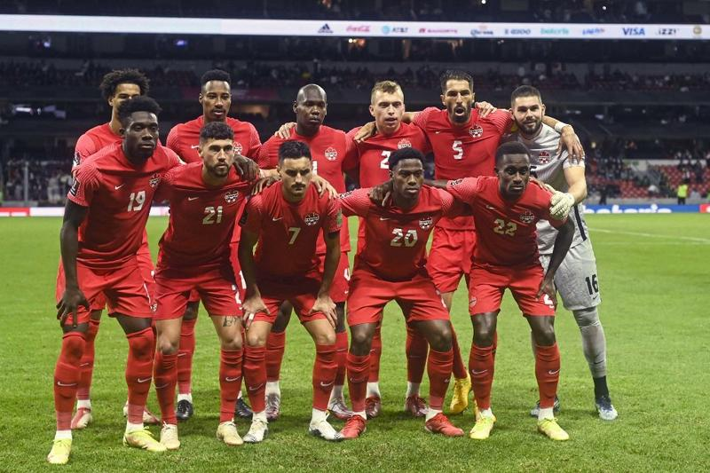

O Canadá vai disputar a Copa do Mundo pela segunda vez em sua história. A última e única participação do país foi em 1986, quando o Mundial foi disputado no México.
Não obteve títulos em Copa do Mundo
| Data/Hora | Estádio | Adversário |
|---|---|---|
| 23 nov 2022 / 16h00 | Estádio Ahmed bin Ali | Bélgica |
| 27 nov 2022 / 13h00 | Estádio Internacional Khalifa | Croácia |
| 1º dez 2022 / 12h00 | Estádio Nacional Lusail | Marrocos |